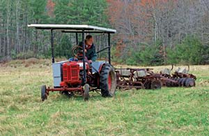
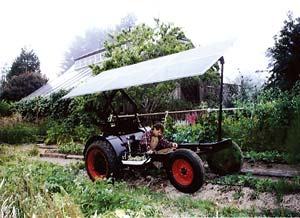
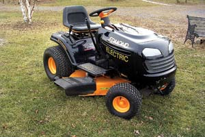
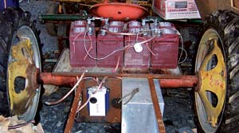
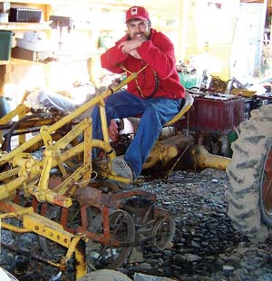
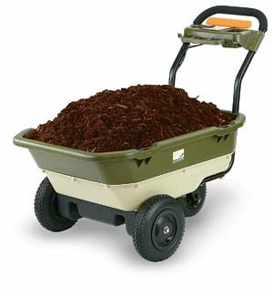
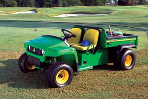

Solar-Electric Mowers & Tractors
Plug in to personal energy independence with clean, sustainable high-tech horsepower.
By George DeVault and Charles Higginson
August/September 2006
Imagine a lawn mower that whirs instead of roars. Imagine a tiller powered entirely by sunlight. Imagine a tractor that doesn’t spew exhaust. These aren’t idle dreams - such machines exist today. And every year, a few new electric and solar-electric implements reach the market. Meanwhile, adventurous inventors, far-thinking tinkerers and electric-vehicle enthusiasts do it themselves, using 21st century technology to convert existing mowers, tractors and other implements to solar-electric power. They’re handling chores and putting food on the table, even as oil wells are drying up.
Solar-electric implements offer sustainability and freedom from fossil fuels, and electric tools, mowers and tractors are cleaner and quieter than their gas-powered counterparts. That explains why they’re showing up on a growing number of farms, market gardens and lawns around the United States and Canada.
Several U.S. companies sell electric lawn mowers, some of them cordless and rechargeable. One sells a small walk-behind tractor and a lawn mower, both powered by solar panels, and is developing a solar-powered electric tractor. Another company plans to introduce electric lawn tractors in Europe later this year and make do-it-yourself conversion kits available in North America soon thereafter. Electric-powered tillers, garden carts and other implements also have appeared on the market in recent years.
Solar-powered Farming
Steve Heckeroth, a renewable-energy pioneer, off-the-grid homesteader in northern California and award-winning architect, says switching to clean, renewable solar-electric power is one of the best ways to solve our growing crises in energy and global warming. And he walks his talk - since 1993, he’s built about a dozen electric cars and converted six farm tractors to run on rechargeable batteries and electric motors, rather than conventional gas or diesel engines. When their solar panels are fully charged, his best tractors can run a loader all day, cultivate for about four hours or drive a rototiller for two hours. The batteries recharge in about three hours.
Some of his tractors carry their own power source: a canopy of solar panels suspended over the machine (see Image Gallery). “The canopy on those tractors generates less than a kilowatt,” he says, “but for planting and harvesting, that’s enough to run the tractor. This is where the electric tractor can really shine.” Heckeroth says electric motors have several big advantages over internal-combustion engines, especially for tractors. Gas engines rarely achieve 20 percent efficiency, but electric motors often approach 90 percent efficiency. Motors never waste fuel by idling; they simply stop. Even if the batteries charge from the conventional grid, an electric motor accounts for far less air pollution than a gas engine (studies show reductions of at least 50 percent). But the clearest advantage of electric vehicles is that they can be charged from nonpolluting, renewable sources, thereby reducing dependence on fossil fuels.
The extra weight of batteries is a disadvantage in automobiles, but it improves tractor performance by increasing traction. And electric motors generate high torque at very low rpm, making them more effective than gas or diesel engines for the low-speed, high-power applications typical for tractors.
In addition, electric motors are constructed more simply than engines and therefore are much easier to maintain. “Using industrial batteries, every component in the electric tractor will operate with very little maintenance for 15 to 20 years,” Heckeroth says. “Many electric forklifts have been in service for 50 years, while their gas counterparts last only five to 10 years.” (See his article, “The Case for Solar-powered Electric Tractors,” April/May 2002.)
In addition to converting tractors to run on batteries, Heckeroth’s company, Homestead Enterprises, has built several electric and solar-electric tractors from the ground up. In the late 1990s, the company created electric prototypes for two major tractor manufacturers, Ford-New Holland and Eifrig Ltd., but the companies did not put them into production.
Despite the numerous advantages of electric power, no major manufacturers have yet decided to lead the shift that now seems inevitable as fossil fuels dwindle and costs climb.
Plow-power Pioneers
Nonetheless, Heckeroth is not alone in his conviction that the future will be solar-electric. Major manufacturers’ lack of vision hasn’t stopped others who share his understanding of the multiple benefits of electric tractors. For now, at least, electric power seems most promising for use on small farms and home gardens. Here is a quick look at the current electric-implement market in North America:
Riding mowers. Canadian entrepreneur Brian Edmond routinely mows two acres of grass using just 50 cents’ worth of electricity each time. Edmond’s electric lawn tractor uses 48-volt deep-cycle batteries, permanently lubricated drive components and an electronic automatic transmission (see Image Gallery).
“I have been using it for two years now without any problem,” Edmond says. “The first thing people say when they see this is, ‘Why isn’t everybody making them?’”
His new company, Edmond Electric Co., is converting 20 horsepower lawn and garden tractors to battery power. The electric lawn tractors, complete with 42-inch mower decks and side discharge, will go on sale in Europe later this year under the Lawn Boss brand. If plans work out, they will reach North American markets in 2007, for about $4,000 each. Edmond says he also hopes to sell kits for converting conventional gasoline-powered lawn tractors to electric power around the end of this year for $1,500 to $2,000.
“The kit should be very easy to assemble and should fit most 38- and 42-inch twin-blade tractors of good quality,” Edmond says.
Electric push lawn mowers. Black & Decker sells a cordless push model for about $450, along with five corded mowers. Country Home Products’ Neuton cordless mower recently became the country’s bestseller, at about $400. Country Home Products also sells the Neuton battery-powered garden cart, with two forward speeds and reverse, 200 pound capacity and push-button controls.
Steve Gladstone, Neuton’s senior product manager, says the company is developing a solar battery charger. “The market is strong now for battery-powered products,” he says. “The interest is there, but battery-electric products cost a bit more than the gas equivalents. The selling points are convenience and ease of use, quiet operation, pollution reduction and low maintenance.”
Several companies, including Brook-stone and Sunlawn, sell battery-powered reel mowers, at prices ranging from $200 to $390 (See “Cordless Electric Lawn Mowers,” April/May 2005).
Solar-electric implements. Free Power Systems is developing a solar-electric tractor. Owner Tom Lopez, a retired aerospace engineer, says, “This new product will use existing farm attachments and will be useful for small farms, with batteries recharged by solar panels attached to its canopy.”
The company already sells two solar-powered devices. The Sun Whisper lawn mower comes standard with a 19 inch blade and a rear leaf bagger, and it recharges from a roof-mounted solar panel. The company says it is ideal for lots up to one-third of an acre. It sells for $675.
The Sun Horse is a 190-pound two-wheeled walk-behind tractor - not a tiller - that plows, cultivates and plants with attachments that mount on a quick-change tool bar. It draws electricity from a solar panel mounted on its handlebar and looks something like a tall, narrow mailbox on wheels. “It is powerful enough for tough jobs like plowing and cultivating, yet precise enough for seeding and close weeding,” Lopez says.
The basic Sun Horse with one solar panel costs $2,250. A complete “farming system” with plow, four-row gang seeder, cultivators and more costs about $4,800.
Electric towing. If you need to lug around heavy loads, two companies make electric vehicles designed expressly to do that. The Electric Ox, made in Ontario by Electric Tractor Corp., comes in 36- and 48-volt versions. The company bills it as a towing vehicle for indoor and outdoor situations. The Electric Ox MP is designed for outdoor use with attachments to mow, tow, grade or push snow. The company says the Ox can tow up to 8,000 pounds. An optional AC inverter allows the 48-volt model to power standard electric tools.
Gorilla Vehicles sells its Gorilla e-ATV in 24- and 36-volt versions. Each can be configured for primary use off-road, on turf, on paved surfaces or in close quarters like warehouses. The e-ATVs can carry payloads of about 450 pounds and can tow up to 4,000 pounds on level ground.
Drill-drive tiller. Last year, Johnny’s Selected Seeds introduced the “Tilther,” a 15-inch-wide mini-tiller powered by a cordless electric drill, developed by master four-season grower Eliot Coleman. It costs $350.
Coleman says he’s not finished inventing. He has a dream, and some plans, for a go-kart-size electric vehicle that would be a small mobile platform for seeding, cultivating and harvesting. “We’ve been to the moon. Surely we can make better tools for small farmers,” he says. “If I could find a bored retired engineer with a good shop, I’d share these plans.”
Too Soon to Scale Up
Convincing major tractor makers to go electric is not a simple task. Like the electric car, electric-powered tractors and garden and yard implements have had an on-again, mostly off-again history. General Electric sold the Elec-Trak lawn tractor in the late 1960s and early ’70s. John Deere sold the Electric 90 and Electric 96 lawn tractor models in the ’70s.
Quite a few of those old electric lawn tractors are still mowing merrily along. In May 2006, a Deere Electric 96 in beautiful working condition sold on eBay for $650.
Some electric tractor enthusiasts covet the 50-year-old Allis-Chalmers G model. Its small size and rear-mounted engine made it ideal for market-garden cultivation - and make it ideal now for conversion to electric power. (See “Vintage Tractor Now Runs on Sunlight," below.) The modern tractor most similar to the old Allis G is the Saukville, which is manufactured in Wisconsin. A 20 horsepower gasoline-powered Saukville sells for about $15,000, while the 26.5 horsepower diesel version costs about $18,600. Implements are extra.
Saukville President Larry DeLeers has been following the growing interest in electric tractors, but has no plans to move in that direction. Electric tractors have potential, he says, but there are just too many unanswered questions.
“Investors are not rushing to the table with wads of cash,” DeLeers says. “Is the market big enough to enable you realistically to recover your investment costs in a reasonable period of time? I would think one of the big companies would look at this.”
In fact, one of the world’s biggest equipment companies, John Deere, is at least looking at alternatives. Deere already sells electric versions of its Gator utility vehicles for about $8,300 and recently introduced a diesel-electric hybrid Gator for the military. Deere is seriously exploring alternative power sources, including electric motors.
“We have multiple teams in our engineering centers working on this,” says Peter Finamore, manager of research and development at John Deere Advanced Energy Systems in Charlotte, N.C. “This is a complex issue. There are no easy answers. We do not have product plans in this area, but we are doing an awful lot of research and development. Electric vehicles are difficult to justify, because the cost of electric batteries and drives is still quite high. But the cost is coming down.” Meanwhile, of course, fuel prices are going up.
Saukville’s DeLeers says, “You need to determine the various loads put on electric motors and how long the batteries can last under extreme loads. You wouldn’t want to be stopping every half hour to charge the batteries.”
Solar-electric devotee Heckeroth says such comments don’t consider the tremendous differences in efficiency: about 80 percent for batteries, 90 percent for electric motors and less than 20 percent for gas and diesel engines. He points out that in many huge vehicles, internal-combustion engines don’t move the vehicle directly but generate electricity, which powers electric motors that actually do the work. “People think electric vehicles are wimpy little things, but the largest earth-moving machines use engines to power electric wheel-motors,” he says. “Most diesel locomotives are electric vehicles. Nuclear submarines are electric vehicles.”
The Little Cub that Can
In Waterford, Maine, retired mechanical engineer John G. Howe plows, discs, rakes hay, tows up to 100 bales at a time - and even enters tractor pulls - all with an antique International Farmall Cub powered entirely by the sun (see Image Gallery).
A metal frame atop the old red tractor holds four photovoltaic panels. They supply electricity to nine 12-volt batteries stored in boxes on both sides of the tractor. The deep-cycle marine batteries cost $60 each. They feed a 10 horsepower DC motor mounted under the driver’s seat. The motor, heavy lead-acid batteries and 11-by-5-foot canopy all add lots of weight, which is exactly what a tractor needs for good traction, Howe says. He spent more than $5,000 converting his Cub to electric power, not counting the cost of the tractor. He says the power plant is more than ample.
“It definitely works!” Howe says. “That little bugger has more power than the tractor can handle. I limit the power to 100 amps maximum so I don’t rip the gears out of the old tractor.”
Howe lectures and writes prolifically about alternative energy and the declining oil supply. He also takes his solar-electric Cub to rural fairs around Maine, and he says it attracts an audience that he can tune into his main concerns. “It’s knee-deep in people all day long,” Howe says. “They love it. We use it to promote the energy cause.”
From lugging logs around his woodlot with a log chain and towing his wife’s Volvo, Howe already knew that his electric Cub was a pulling fool. But, out of curiosity, he entered it in a load-pulling contest at a fair last year. “I used second gear, let some air out of the tires and raised the hydraulics,” he says. “The front end came up. I couldn’t steer. After 40 or 50 feet, I started to head for a wall. I had to shut it down. I got a standing ovation when I drove out of there.”
The Solar-electric Future
As the experiences of Heckeroth, Howe and others show, today’s technology - plus a little amateur ingenuity - can convert a standard gas-powered tractor into a quiet, emission-free, solar-powered electric tractor.
Today, solar-electric mowers and tractors are several things, depending on scale and point of view: do-it-yourself projects, on-the-shelf products, development projects or promising prototypes. Stay tuned - as improved solar collectors and electric drives become available, and oil becomes ever more expensive, we predict that clean, sustainable solar-electric power will drive increasing numbers of machines everywhere.
Vintage Tractor Now Runs on Sunlight
It never fails. Whenever Ron Khosla turns on his tractor, nothing happens. No grinding starter, no plume of blue-black smoke from an exhaust pipe, no clattering engine. That’s because Khosla’s tractor doesn’t have a starter, an exhaust pipe or an engine.
Khosla’s antique Allis-Chalmers Model G tractor used to have all that, of course, as well as a radiator that could boil over in summer or freeze in winter, a cantankerous carburetor that could leak gasoline, a fan belt that could break, and motor oil and various filters that he had to change.
Now, his solar-powered G runs quietly and efficiently, virtually maintenance- and worry-free. Four powerful batteries sit behind the driver’s seat, where a 5 gallon gasoline tank, a radiator, a fan and a 12 horsepower internal-combustion engine were originally installed more than half a century ago.
Khosla doesn’t miss the engine, its noise or its smell one bit. He doesn’t worry about running out of gas or its rising price, either. After hours of peacefully planting or cultivating, Khosla simply parks his tractor in the field, plugs it into a large, portable solar panel and recharges his batteries - free - from the sun.
“I have never run out of juice,” he says. “I have never had a problem. We couldn’t farm without it.” He liked his first electrified G so much that he converted a second G to solar-electric power. Khosla and his wife, Kathryn, use the Gs to run their 13 acre Huguenot Street Farm in New Paltz, N.Y., about 60 miles north of New York City. This Community Supported Agriculture farm serves 235 members and three large restaurants. Khosla spent $1,325 converting each tractor. Costs of the solar panel, mounting frames, etc., were about $2,200. The project was funded by a $7,000 grant from the U.S. Department of Agriculture’s Sustainable Agriculture Research and Education program, which included production of an instruction manual. (Step-by-step instructions for converting an Allis-Chalmers G to electric power appear on Khosla's Web site. - Mother)
“The electric G is still cheaper than a new cultivating tractor,” Khosla says. “And it just feels so cool not to have to plug the tractors into a grid electrical outlet. We also have converter that allows us to power the whole house and our walk-in cooler off the tractor batteries, which were charged off the sun. That’s literally cool!
“From a marketing perspective, saying we run the farm on electric tractors is good, but saying we run it on solar-electric tractors ... well, that just takes the farm right over the top!”
Candidates for Conversion
The Farmall Cub, Allis-Chalmers Model G and John Deere L tractors are well suited to electric conversion. They were built from the late 1930s to early 1960s, specifically to replace teams of horses on small farms. The roughly 10 horsepower size of each tractor is perfect for conversion to electric power, solar-electric enthusiast John Howe says. “It’s big enough to be useful, yet small enough to be manageable.”
There’s just one big problem with those little old tractors - supply. Altogether, only about 250,000 were built. Only 29,970 Allis Gs were made, between 1948 and 1955, and the Deere L is even more scarce: Only 12,500 were produced, between 1937 and 1946. Each model is highly collectible. Restored or just in good condition, they sell at auction for $5,000 to $6,500. The occasional bargain turns up: Ron Khosla, a market farmer in New Paltz, N.Y., bought two Allis Gs for the unbelievable price of $1,000 each, and one actually had a working engine. Cubs are much more plentiful and affordable. More than 200,000 Cubs were made, between 1947 and 1964, and auction prices of $1,000 to $1,500 are common.
A great source of information about antique farm equipment is www.FarmCollector.com, which includes an online collectors’ show directory.
|
 JOHN SNYDER This solar-electric tractor, converted by John Howe from an old Farmall Cub, pulls a disk harrow with ease. |
 STEVE HECKEROTH Steve Heckeroth puts in transplants using his tractor powered entirely by the overhead solar panels. |
 EDMOND ELECTRIC TRACTORS The Edmond Electric lawn tractor may be available in North America in 2007. |
|
 GEORGE DEVAULT Four powerful batteries replaced a 5 gallon gasoline tank, a radiator, a fan and a 12 horsepower internal-combustion engine in Ron Khosla’s solar-powered antique Allis-Chalmers Model G tractor. |
 GEORGE DEVAULT Ron Khosla uses his solar-powered antique Allis-Chalmers Model G tractor to run the Huguenot Street Farm, a 13 acre Community Supported Agriculture farm in New Paltz, N.Y. |
 COUNTRY HOME PRODUCTS The Neuton electric garden cart can carry up to 200 pounds. |
|
COUNTRY HOME PRODUCTS The Neuton cordless electric mower is much quieter and lighter than gas mowers. |
 CRAIG KURTH This 1975 John Deere Electric 96 mower recently sold on eBay for $650. |
 JOHN DEERE & CO. The 2006 John Deere Gator TE utility vehicle hauls up to 500 pounds and sells for about $8,300. |